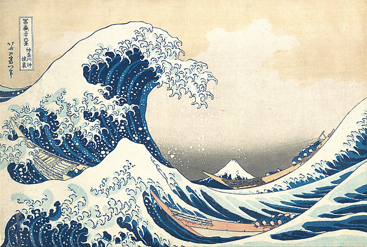
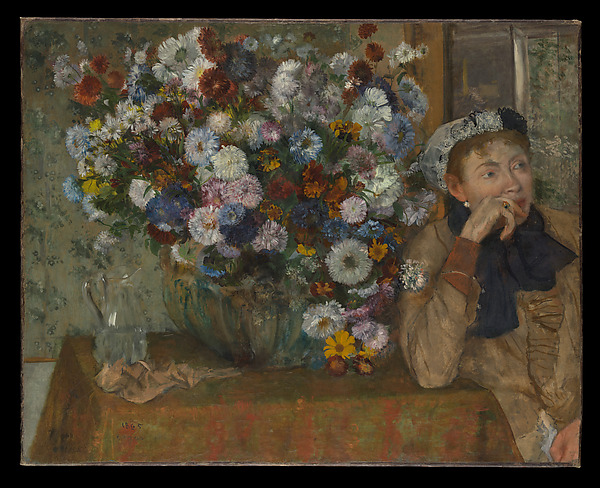
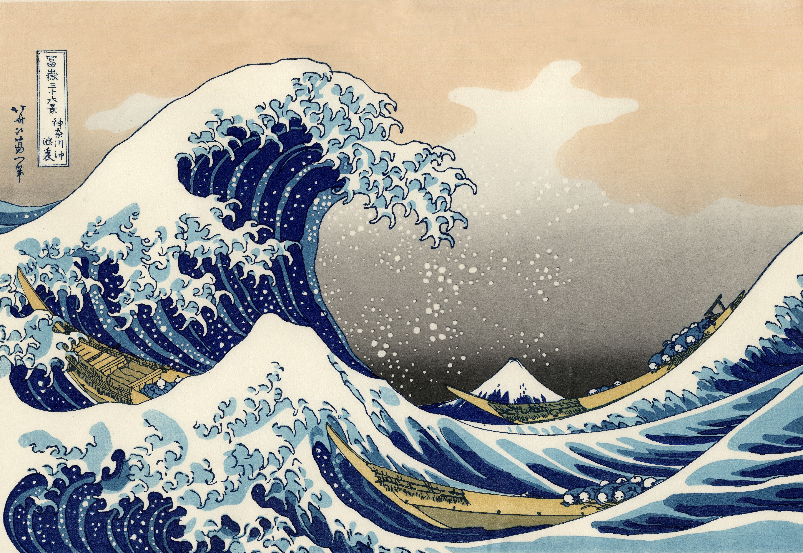

Фотография Дарьи
заменим на оригинал
заменим на оригинал
01 / Обо мне
Фото Дарьи

Картины как способ сохранить чувство.
Меня зовут Дарья Нинькова. Я создаю яркие работы, в которых цвет становится способом сохранить настроение, воспоминание или внутренний диалог.
Здесь будет личная история Дарьи: как она пришла к живописи, что её вдохновляет и какие темы она раскрывает в своих работах.
Узнать больше02 / Портфолио
Портфолио




Пока используются демонстрационные изображения. Позже здесь появятся работы Дарьи.
03 / В наличии
Работы, которые можно приобрести
Этот раздел будет пополняться Дарьей. У каждой картины появятся название, размер, техника, стоимость и короткая история.
Обсудить работу04 / Контакты
Давайте обсудим
вашу картину.
Готовая работа, индивидуальный заказ или вопрос — всё можно обсудить напрямую с Дарьей.